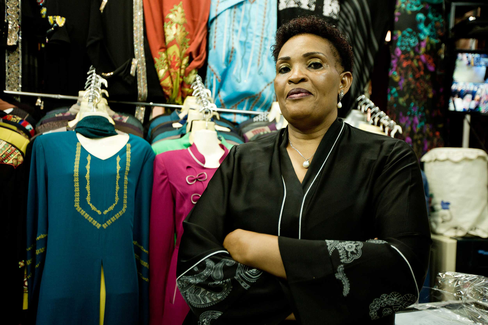

Mobilising millions
When an unexpected measure was announced that would hit poor farmers with a new tax, ActionAid Uganda swung into action. With deep roots in rural communities and a network of trusted partners, ActionAid Uganda organised a petition campaign and gathered over one million signatures within just a few weeks.
“If the people are informed and mobilised and they collectively advocate for something — it’s the way to go!”
- Florence Tumirwe, Matyana, Uganda
Signatory to the petition to reduce tax on agricultural inputs. Photo: Marius van Graan/ActionAid
Although many people in rural areas had not really thought about taxation before, they could plainly see the injustice of being taxed more while receiving fewer public services.
Influential supporters in parliament backed the campaign and it won a resounding success with the new tax being scrapped.
The Five million signature campaign against MPs Tax exemptions. Photo: ActionAid
In 2016 an even greater challenge was presented, in the face of unfair tax exemptions that MPs were seeking to benefit themselves at the expense of the country. The target this time was even more ambitious — five million signatures, and was achieved in only two weeks.
This time, as well as the rural supporters who had been involved in the first campaign, urban citizens gave their support. The Kampala City Traders Association was able to reach market traders and their customers. These traders were only too aware of all the charges they are obliged to pay and were shocked that MPs, who are among the higher earners in the country, should want to dodge taxation that pays their own wages.

Hajat Nanar Mulindwa, Kampala city trader.
Photo: Ghinwa Daher/ActionAid
Initially successful, the President refused to sign the bill into law — not once, but twice — following the delivery of the petition to the Prime Minister. However MPs dug in their heels and threatened to refuse to pass the budget, creating political tension. Success was not guaranteed.
Setbacks are inevitable when confronting entrenched interests. Even after the President had signed the bill, the story was far from over. The coalition built around this issue, as a strong issue of principle as well as lost revenue, is confident that this tax exemption is unconstitutional and can be challenged in the courts. The Uganda Law Society is the latest of the coalition partners to take the baton and once the bill is published will be challenging its legality. Throughout the campaign the media has assisted the mobilisation and kept the issue under debate nationwide.
Mr. Evarest Kayondo, the Chairman of the Kampala City Traders Association Photo: Martin Kharumwa/ActionAid
Setbacks, lessons and next steps
These mass mobilisations have helped to inform citizens about their rights and provided them with a channel to make their voices heard. The civil society coalition has been strengthened and intends to follow this issue through to conclusion.
It is certain that this will not be the last time that they will come together to help raise the voices of citizens against injustice, together a voice that cannot be ignored.